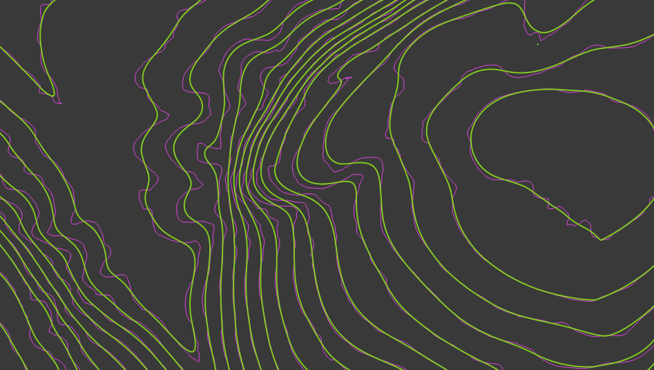

I started this project a couple of years ago with the intention to design a nice looking map from scratch... the shaded relief basemap, contours, symbols, trail lines, legend. GIS work was done in ArcGIS and QGIS. Design work done in Inkscape.
Enchanted Rock is one of my favorite places in Texas. I spent a good chunk of time climbing, hiking, camping and scrambling around the park.
The contours and shaded relief basemap were created from a digital elevation model (DEM) available from USGS. The opacity and color ramps of the overlayed hillshade and DEM rasters can be adjusted to create the desired shaded relief effect.


The contours also needed to be smoothed for cartographic quality, which was done with ArcGIS. Bits and pieces of isolated contours that were not removed with the smoothing were manually removed.
